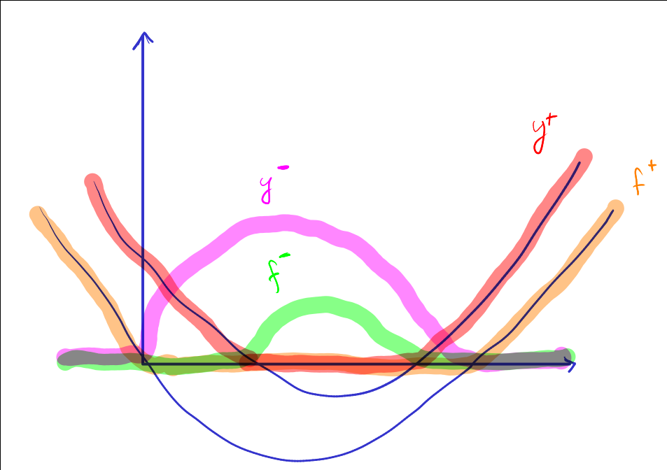
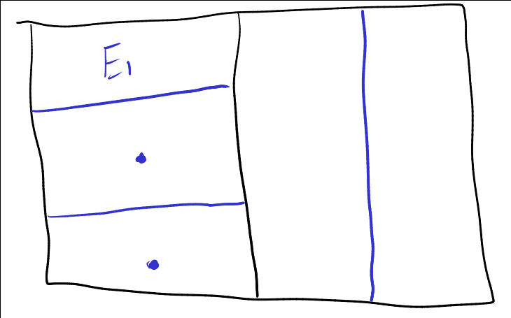

Лекция 3
Table of Contents
1 Интеграл
- \(f \ge 0\), ступенчатые
\(f = \sum_\text{кон.} \alpha_k \chi_{E_k}\), \(E_k\) — измеримое
\(\int_X f = \sum \alpha_k \mu E_k\) - \label{int_3_2} \(f \ge 0\), измеримая
\(\int_X f d\mu = \sup_{\substack{0 \le g \le g \\ f\text{ --- ступ.}}} \int_X g d\mu\) \label{int_3_3} \(f\) — измерима, \(f^+, f^- \ge 0\) — измеримые
Пусть \(\int_X f^+\) или \(\int_X f^-\) — конечные
Тогда \(\int_X f = \int_X f^+ - \int_X f^-\)Если \(\int_x f^+,\ \int_X f^-\) — оба конечные, то \(f\) назывется суммируемой
\(f\) — измеримая, \(\ge 0\), интеграл \ref{int_3_3} = интеграл \ref{int_3_2}
\(E \subset X\) — измкримое, \(f\) — измерима на \(X\)
\(\int_E f d\mu = \int_X f\cdot\chi_E\)
\(f = \sum \alpha_k \chi_{E_k}\ \int_E f = \sum \alpha_k \mu(E_k \cap E)\)
\(\int_E f d\mu = \sup \{fg:\ 0 \le g \le f\text{ на } E, g\text{ --- ступенчатые}\}\), можно считать что \(g\) — тождественный 0 вне множества \(E\)
\(\int_E f\) не зависит от значений \(f\) вне \(E\)
\((X, \A, \mu)\) \(E\subset X\) — измеримое, \(g, f\) — измеримые. Свойства:
\label{prop_3_1} Монотонность \(f \le g\) \(\int_E f \le \int_E g\)

- \(f, g \ge 0\) — очевидно
- \(f, g\) — произвольные
\(f^+ \le g^+\ f^- \le g^-\)
\(\int_E f^+ \le \int_E g^+\ \int_E f^- \le \int_E g^- \Rightarrow \text{OK}\)
- \(\int_E Ad\mu = \mu E\ \int_E 0 d\mu = 0\)
\label{prop_3_3} \(\mu E = 0\ \int_E f= 0\)
- \(f\) — ступенчатая
- \(f \ge 0\) — измеримая
Змечание:
\(f\) — измеримая. Тогда \(f\) — суммируемая ⇔ \(\int |f| < + \infty\)
- \((\Leftarrow)\)
- следует из cвойства \ref{prop_3_1}. \(f^+, f^- \le |f|\)
- \((\Rightarrow)\label{remark_3_1_proof}\)
- позже
- \label{prop_3_4} \(\int_E(-f) = -\int_E f,\ \forall c \in \R\ \int_E c f = c\int_E f\)
- \((-f)^+ = f^-\ (-f)^- = f^+\)
- можно считать \(c > 0\) для \(f \ge 0\) — тривиально
\(\exists \int_E f d\mu\)
Тогда \(|\int_E f d\mu| \le \int_E |f| d\mu\)\(-|f| \le f \le |f|\). По свойствам \ref{prop_3_3} и \ref{prop_3_4}
\(\mu E \le +\infty,\ a\le f\le b\)
Тогда \(a\mu E \le \int_E f \le b \mu E\) \(\color{gray} a\chi_E \le f \le b\chi_E\)\(f\) — измерима на \(E\), \(f\) — ограничена на \(E\), \(\mu E < + \infty\)
Тогда \(f\) — суммируемая на \(E\)\(f\) — суммируемая на \(E\). Тогда \(f\) — почти везде конечная
- \(f \ge 0\ f = + \infty\) на \(A \subset E\) \(\forall n \in \N\ \int_E f \ge n\mu A\)
- \(f = f^+ - f^-\)
\label{lemma_3_1}
\[ A = \bigsqcup_{i - 1}^{ + \infty} A_i \]
— измеримые, \(g\) — ступенчатая, \(g \ge 0\)
Тогда \[ \int_A g d\mu = \sum_{i = 1}^{ + \infty}\int_{A_i}g d\mu \]
\(\int_A g d\mu = \sum_\text{кон.} \alpha_k \mu(E_k \cap A) = \sum_k\sum_i \underbrace{\alpha_k\mu(E_k \cap A_i)}_{\ge 0} = \sum_i \sum_k \dots = \sum_i\int_{A_i} gd\mu\)
\(A = \bigsqcup A_i\) — измеримые, \(f: X \to \overline{\R}\) — измеримая на \(A\), \(f \ge 0\)
Тогда \(\int_A fd\mu = \sum_{i = 1}^{ + \infty} \int_{A_i} f d\mu\)
- \((\le)\)
- ступенчатая \(g:\ 0 \le g \le f\ \int_a g = \sum\int_{A_i} g d\mu \le \sum \int_{A_i} f\) — по \hyperref[lemma_3_1]{Лемме}
- \((\ge)\)
\(A = A_1 \cup A_2\)
\(0 \le g_1 \le f\chi_{A_1}\ 0 \le g_2 \le f\chi_A_2}\)
\[ g_1 = \sum \alpha_k \chi_{E_k}\ g_2 = \sum \beta_k \chi_{E_k} \] Считаем что \(E_k\) – совместное разбиение \[ 0 \le g_1 + g_2 \le f \chi_A \] \[ \int_{A_1} g_1 + \int_{A_2} g_2 = \int_A g_1 + g_2 \le \int_A f \] Перейдем к супремуму \[ \int_{A_1} f + \int_{A_2} g_2 \le \int_A f \] \[ \int_{A_1} f + \int_{A_2} f \le \int_A f \]
- \(\forall n \in \N\) — индукция по \(n\)
- \[ A = \bigsqcup_{i = 1}^n A_i \sqcup B_n \], где \[ B_n = \bigsqcup_{i > n} A_i \] \[ \int_A f = \sum_{i = 1}^n \int_{A_i} f + \int_{B_n} f \ge \sum_{i = 1}^n \int_{A_i} f \]
- \(f \ge 0\) — измеримая
- \(\nu: \A \to \overline{\R}_+\)
- \(\nu E := \int_E fd\mu\)
Тогда \(\nu\) — мера
\(f\) — суммируема на \(A = \bigsqcup A_i\) — измеримые
Тогда \[ \int_A f = \sum \int_{A_i} f \]
\(f^+, f^- \dots\) \(\color{red}???\)
1.1 Предельный переход под щнаком интеграла
\(f_n \to f\). Можно ли утверждать \(\int_E f_n \to \int_E f\)?
\(f_n, f: \R \to \R\)
\(f_n = \frac{1}{n} \cdot \chi_{[0, n]}\ f\equiv 0\ f_n \to f\) (даже \(f_n \rightrightarrows f\) на \(\R\))
\[ \int_\R f_n = \frac{1}{n}\lambda[0, n] = 1\not \xrightarrow[n \to + \infty]{} 0 = \int_\R f \]
\((X, \A, \mu)\), \(f_n\) — измеримая
\(\forall n\ 0 \le f_n \le f_{n + 1}\) почти везде \(f(x) := \lim_{n\to + \infty} f_n(x)\) почти везде
Тогда \(\lim_{n \to + \infty}\int_X f_n d \mu = \int_x fd\mu\)
\(f\) — задана всюду, кроме множества меры \(0\). Считаем, что \(f = 0\) на \(e\)
Тогда \(f\) — измерима на \(X\).
- \((\le)\)
- очевидно. \(f_n \le f\) почти везде \(\int f_n \le \int f\) \[ \int_X f_n = \int_{X\setminus e}f_n + \int_e f_n = \int_{X\setminus e} f_n \le \int_{X \setminus e} f \le \int_X f \]
- \((\ge)\)
- Достаточно: \(\forall g\) — ступенчатая \(0 \le g \le f\)
\[ \lim \int_X f_n \ge \int_X g \]
Достаточно: \(\forall c \in (0, 1)\)
\[ \lim \int_X f_n \ge c \int_X g \]
\[ E_n := X(f_n \le c g) \dots \subset E_n \subset E_{n + 1} \subset \dots \]
\(\bigcup E = X\) т.к. \(c < 1\)
\[ \int_x f_n \ge \int_{E_n} f_n \ge c \int_{E_n} g \]
Тогда \(\lin \int_X f_n \ge c \lim \int_{E_n} g = c\int_X g\)
Последнее равентсво справедливо в силу непрерывности мнизу меры \(\nu: E \mapsto \int_E g\)
\(f, g \ge 0\) измерима на \(E\)
Тогда \[ \int_E f + g = \int_E f + \int_E g \]
- \(f, g\) — ступенчатые
\[ f = \sum \alpha_k\chi_{E_k},\ g = \sum \beta_k\chi_{E_k} \] \[ \int_E f + g = \sum (\alpha_k + \beta_k)\mu(E_k \cap E) = \sum \alpha_k \mu(E_k \cap E) + \sum \beta_l \mu(E_k \cap E) = \int_E f + \int_E g \] - \(f \ge 0\) — измерима ⇒ ∃ стпенчатая \(f_n:\ 0 \le f_n \le f_{n + 1} \le \dots \ \lim f_n = f\)
\(g \ge 0\) — измерима ⇒ ∃ стпенчатая \(g_n:\ 0 \le g_n \le g_{n + 1} \le \dots \ \lim g_n = g\)
\(f_n + g_n \to f + g\ \int_E f_n + g_n \to \int_E f + g\)
\(\int_E f_n + g_n = \int_E f_n + \int_E g_n \to \int_E f + \int_E g = \int_E f+g\)
\(f, g\) — суммируемы на \(E\)
Тогда \(f+g\) — суммируема и \(\int_E f + g = \int_E f + \int_E g\)
Свойство \(\ref{remark_3_1_proof}\) доказано
Суммируемость \(|f+g|\le |f| + |g|\)
\(h = f + g\). Тогда:
\[ h^+ - h^- = f^+ - f^- + g^+ - g^- \Leftrightarrow h^+ + f^- + g^- = h^- + f^+ + g^+ \]
\[ \Rightarrow \int_E h^+ + \int_E f^- + \int_E g^- = \int_E h^- + \int_E f^+ + \int_E g^+ \]
\[ \int_E h^+ - \int_E h^- = \int_E f^+ - \int_E f^- + \int_E g^+ - \int_E g^- \]
\[ \int_E h = \int_E f + \int_E g \]
\(\mathcal{L}(X) =\) множество функций суммируемых на X
\(\mathcal{L}(X)\) — линейное пространство, а отображение \(f \mapsto \int_X f\) — это линейный функционал на \(\mathcal{L}(X)\) , т.е. \(\forall f_1, \dots, f_n \in \mathcal{L}(X)\ \forall \alpha_1, \dots, \alpha_k \in \R\) \[ \sum_{k = 1}^n \alpha_k f_k \in \mathcal{L}(X);\ \int_X\sum\alpha_k f_k = \sum_{k = 1}^n\alpha_k\int_X f_k\]
\((X, \A, \mu)\ E \in \A\ \underset{\text{изм.}}{u_n}: X \to \overline{\R}\ u_n \ge 0\) почти везде
Тогда \[ \int_E(\sum_{n = 1}^{ + \infty} u_n(x))d\mu(x) = \sum_{n = 1}^{ + \infty} \int_E u_n d\mu \]
по т. Леви: \(S_n := \sum_{k = 1}^n u_k\ 0 \le S_n \le S_{n + 1} \le \dots\ S_n \to S\) — сумма ряда \(\sum u_n\)
Тогда \(\int_E S_n \to \int_E S\), \(\int_E S_n = \sum_{k = 1}^n \int_E u_k \to \int_E S\)
\(u_n\) — измеримые \(\sum_{n = 1}^{ + \infty} \int_E |u_n| < + \infty\)
Тогда ряд \(\sum u_n(x)\) — абсолютно сходится при почти всех \(x\)
\(S(x) := \sum |u_n(x)| \ge 0\) — измеримая \[ \int_E S(x) = \sum \int_E |u_n| < + \infty \] ⇒ \(S\) — сумиируема ⇒ \(S\) почти везде конечена
\(x_n \in \R\) — произведение последовательности; \(\sum a_n\) — абсолютно сходится
Тогда \(\sum \frac{a_n}{\sqrt{|x - x_n|}}\) — абсолютно сходится при почти всех \(x\)
Достаточно проверить абсолютную сходимость на \([-N, N]\) почти везде